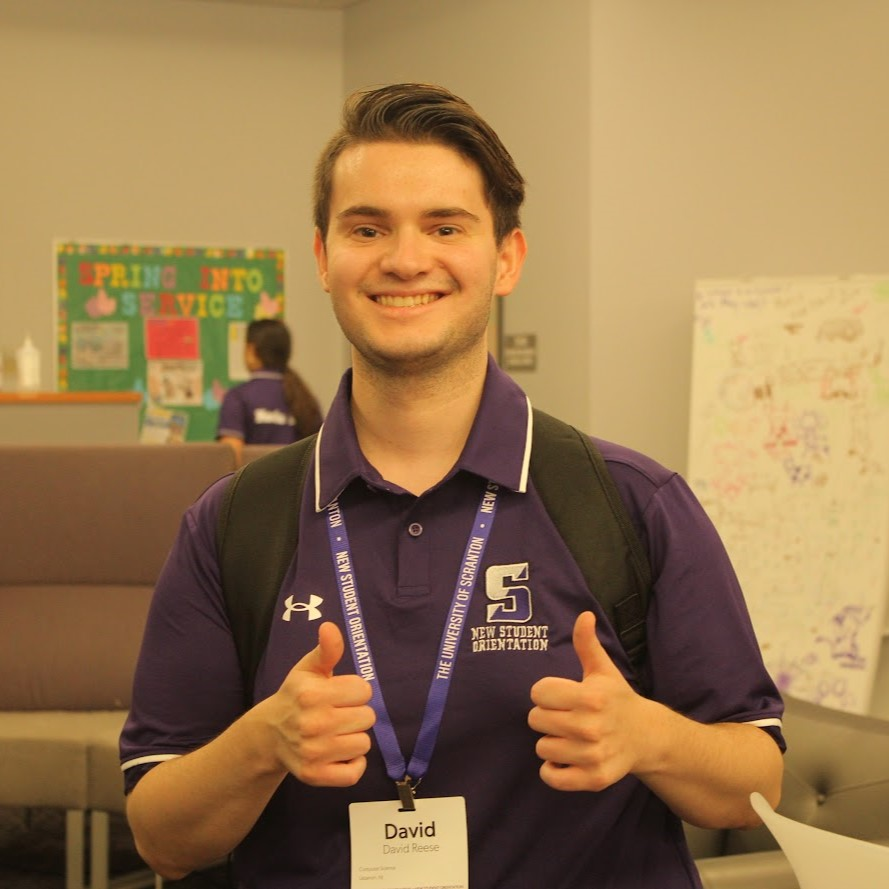
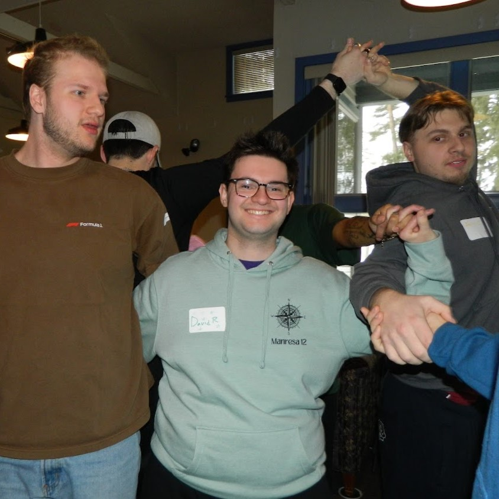
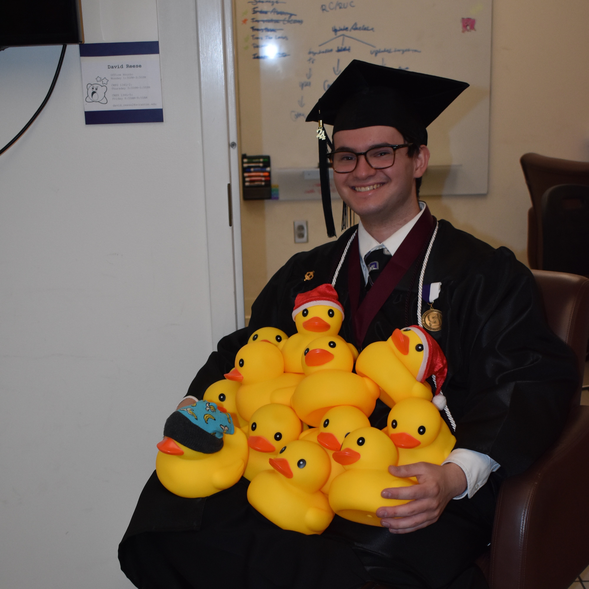
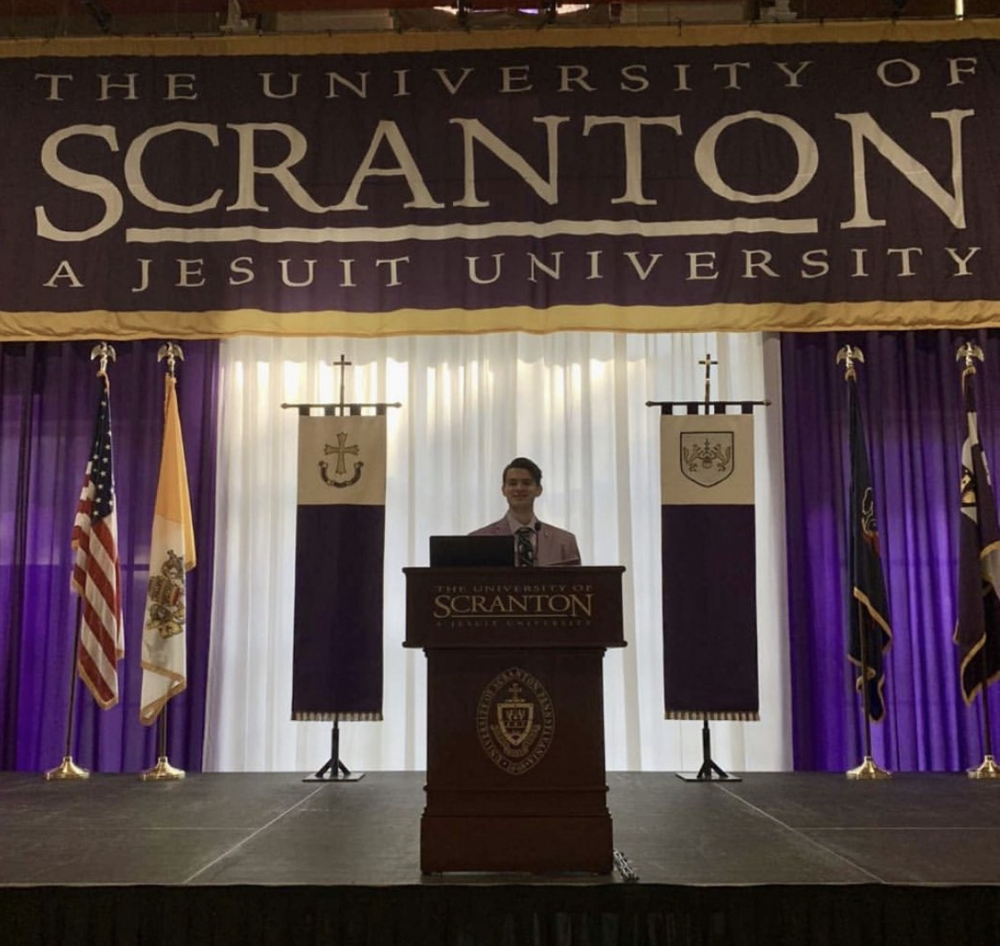
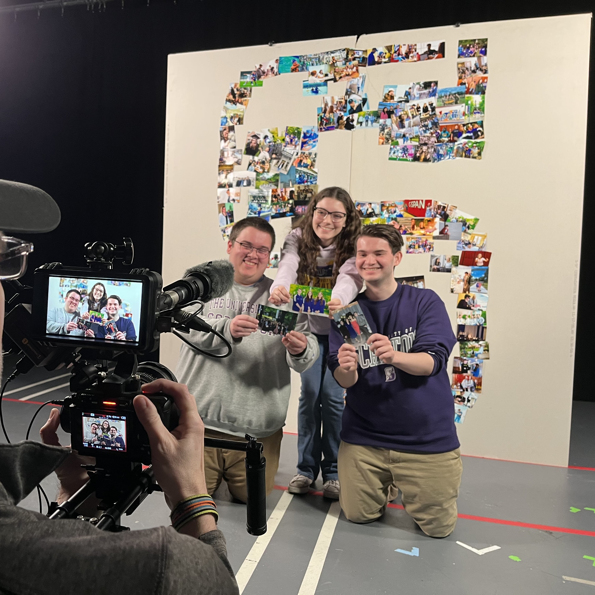

|
David Reese
Software Engineering Graduate Student | Software Engineer
|
(A Bit More) About Me
On a less technical note, here are some fun experiences, facts, and photos from the past few years.
To learn a bit less about me, click here.
Fun Facts
- I've participated in multiple admissions photo shoots, including one where I shared stories about friends I've made through my major.
- I've helped run 17 orientation sessions.
- As part of a Leadership Capstone, I gave a presentation on how my leadership roles on campus have shaped me.
- I've led numerous presentations for first-year students on Microsoft Excel.
- For two years, I organized and managed my department's merchandise sale.
- A friend and I started a tradition of hiding rubber ducks around the Computer Science lounge for others to find.
- I once stood on top of a campus building to photograph the incoming first-year class.
- I've taught approximately 90 students as a Teaching Assistant.
- When running for Student Government, I made campaign posters promoting my ability to bake banana bread. It ended up working, I got elected!
- I'm a soup fanatic. My favorite is butternut squash soup, but it's hard to choose just one.
- LISP was my favorite programming language to learn. Although I don't remember much of it, it was by far the most fascinating and fun.
- I'm almost always listening to music. My current favorite song is Them Dirty Bones by Mike Waters.
- I love tea. My favorite non-loose tea is Constant Comment from Bigelow, and my favorite loose tea is Salted Caramel Oolong from DAVIDsTea.
- My first computer program was a Java application that calculated the volume of a box based on user input.
- On my undergrad graduation cap, I used the Winnie the Pooh quote, "How lucky am I to have something that makes saying goodbye so hard."
- Each week for lab, I choose a fun theme. Some past themes have included Groundhog Day, planets, and even the color orange.
Gallery
A glimpse into my anecdotes and adventures.




